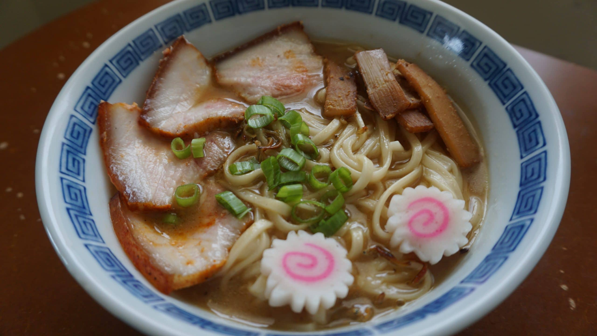

kitakata Ramen

Ingredients
-
For Broth:
- 8 cups water
- 4 cups pork bones (such as pork neck bones or trotters)
- 2 cloves garlic, smashed
- 2-inch piece of ginger, sliced
- 1 onion, sliced
- 2 tablespoons soy sauce
- 2 tablespoons sake (Japanese rice wine)
- Salt, to taste
-
- 4 packs of ramen noodles (about 400g)
- 2 tablespoons vegetable oil
- 4 cloves of garlic, minced
- 1 tablespoon grated ginger
- 4 green onions, sliced
- 4 sheets of nori (seaweed), cut into small squares
- 16 slices naruto fish cake
-
Optional Toppings:
- Sliced pork belly (chashu)
- Kikurage mushrooms
- Menma (bamboo shoots)
- Pickled ginger
Instructions
-
Broth
-
In a large pot, add the pork bones, smashed garlic, sliced ginger,
and sliced onion.
-
Pour in 8 cups of water, covering the ingredients. Bring it to a
boil.
-
Reduce the heat to low and simmer the broth for at least 4-6 hours,
skimming off any impurities that rise to the surface.
-
After simmering, strain the broth through a fine-mesh sieve,
discarding the solids.
-
Return the broth to the pot and place it over low heat.
Stir in the soy sauce, sake, and salt to taste. Keep the broth warm
while preparing the rest of the ramen.
-
Ramen Assembly
-
Cook the ramen noodles according to the package instructions. Drain
and set aside.
-
In a large pot or skillet, heat 2 tablespoons of vegetable oil over
medium heat.
Add the minced garlic and grated ginger, and sauté for about 1
minute until fragrant.
- Divide the cooked ramen noodles into four serving bowls.
-
Pour the hot broth over the noodles, making sure to distribute it
evenly.
-
Top each bowl with sliced green onions, 4 naruto fish cakes, nori
squares.
-
Optional: Add additional toppings such as sliced pork belly
(chashu), kikurage mushrooms, menma (bamboo shoots), or pickled
ginger
-
Cut the soft-boiled eggs in half and place two halves in each bowl.
- Serve the Kitakata Ramen immediately while hot.
Specificity
Kitakata ramen is one of the three main types of ramen in Japan.
It is characterized by thick and curly noodles made from high quality
wheat flour and water from the Iide Mountains.
The soup is usually soy sauce-based and topped with sliced pork, bamboo
shoots, green onions, and other ingredients1. The noodles are generally
four millimeters wide, while being flat and curled.
People usually top off this ramen with green onions, naruto (fish cakes),
dried bamboo shoots, and most importantly, Chashu (roasted pork fillet) or
Char Siu (Chinese BBQ Pork)
back to home